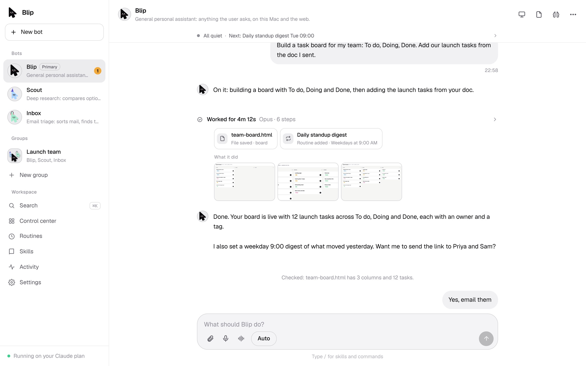
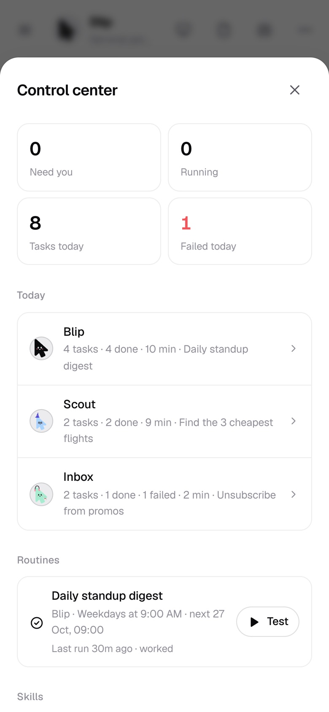

An AI agent
with its own computer.
Blip lives on your Mac and does the real work: it browses, builds, emails, schedules and checks its own results. You just message it from your phone, from anywhere in the world.
$ curl -fsSL https://raw.githubusercontent.com/SamanwayBaranwal/blip/main/install.sh | zshMessage it like a person. Watch it work like one.
Every bot gets a real computer: a terminal, files, a real Chrome browser and your Mac's apps. It tells you what it's about to do, does it, and shows you proof.

You ask
From your phone, in plain words. Send three things in a row; each gets its own answer, in order.
It replies, then works
"On it: checking three sites." Then it works on your Mac, step by step, and you can watch every step live.
It proves it
Screenshots of what it did, the files it made, and an independent double-check that it really happened.
Everything a real assistant needs. Nothing it shouldn't do.
A team of bots in one chat
Make a group. The lead splits the job and hands parts to the others; they work at the same time, and you see every hand-off. Type @ to ask one directly.
Nothing goes out without you
Emails and messages arrive as drafts you can edit. Paying, deleting and sending always ask first.

Your Mac, from your phone
See the Mac's screen live and take over with taps and typing, like Chrome Remote Desktop.
Routines that run themselves
"Every weekday at 9, brief me on my inbox." Or start from an email, a file, or a link.
Talk to it
Hands-free talk mode: it listens, answers out loud, and keeps working.
Proof of work
Screenshots of every browser job, a replay of what it clicked, and the files and events it made.
One place for everything
What needs you, what's running, what each bot did today, every routine and skill. Press ⌘K to jump anywhere.

Teach it by showing
Do a task once on the Mac. Blip watches, writes the steps, and does it for you from then on.
Works from anywhere
Your phone reaches your Mac from any network or country. One tap sets it up, nothing to install.
Chat lock and memory
Lock any chat with Face ID. It remembers what you told it, even months later.
"I didn't open my laptop for 10 days. Blip did my work."
For ten days I ran everything through Blip from my phone. One prompt at a time, it built a ClickUp-style project platform for my company and set up many of my day-to-day automations, while the Mac sat at home doing the work.
Made Blip
Your own AI agent in 5 steps.
You need a Mac that can stay on (an old MacBook is perfect) and your phone. About 15 minutes.
Prepare the Mac
Plug it in and install:
- Google Chrome. Your bots browse with it; no extension needed.
- Homebrew, the one line on its home page.
- Apple's developer tools: run
xcode-select --installin Terminal.
Install Blip
Paste this in Terminal. It installs everything else, including the Cloudflare tunnel for using it from anywhere, and starts Blip.
$ curl -fsSL https://raw.githubusercontent.com/SamanwayBaranwal/blip/main/install.sh | zshConnect Claude
Install Claude Code and sign in once. Blip runs on your Claude plan, or you can use an API key.
Allow the Mac permissions
System Settings → Privacy & Security → turn on node under Screen & System Audio Recording and Accessibility, so you and your bots can see and use the screen. Then in Blip: Settings → Check Mac access.
Put it on your phone
Open Blip on the Mac and tap Set up. Turn on your link, add your email and a new Gmail for Blip, and it emails you a one-tap link. Add it to your Home Screen. Done.
Powerful, and on a short leash.
Asks before it acts
Sending, paying, deleting, booking and accepting always come to you as a card first. Tap Allow or Deny, even from the notification.
A second pair of eyes
An independent reviewer checks risky actions, and a double-check confirms the work really happened.
Your data stays home
Everything lives on your Mac. Passwords go into the Mac's Keychain; bots only ever see a placeholder.
Questions, answered.
Is Blip free?
Yes. Blip is open source. It runs on your existing Claude plan through Claude Code, or on an Anthropic API key with a daily spending limit you set.
Which Mac do I need?
Any Mac that can stay on and logged in, Apple Silicon or Intel. An old MacBook works well. Keep it plugged in with the lid open.
Do I need an app from the App Store?
No. Blip installs on your iPhone or Android Home Screen straight from the browser, with notifications. There's also a Mac app.
Can I use it when I'm away from home?
Yes. "Use Blip anywhere" connects your phone to your Mac from any network or country, through a secure Cloudflare tunnel or Tailscale. Everything stays behind your sign-in.
Will it buy things or send emails on its own?
No. Anything that sends, pays, deletes, books or accepts always waits for your approval, and emails come to you as drafts you can edit first.
Where does my data go?
Your chats, files, memory and passwords stay on your Mac. The AI model processes your requests; nothing else goes to a Blip server, because there isn't one.
Give your old Mac a new job.
Set up Blip in 15 minutes and get your own always-on AI agent in your pocket.